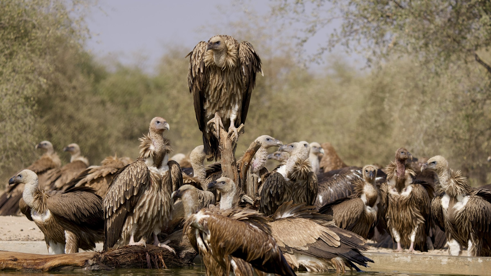

The Land of Bustards
A winter birding tour across the wetlands, grasslands and desert of Rajasthan
Closed This departure is not running. Write to us to hear about future dates.
Get in touch →
Three habitats, one circuit
The route moves from the flooded jheels of Bharatpur, through the open grassland of Tal Chhapar, to the dunes of the Thar: three of India's most distinct bird habitats in one journey.
At its centre is the Great Indian Bustard, one of the world's most critically endangered birds, with fewer than two hundred left, almost all of them in this corner of the desert.
A Great Indian Bustard in Desert National Park.
Itinerary
Arrive Delhi
We meet you at Delhi airport and transfer you to your hotel. Rest, then a welcome dinner and briefing in the evening.
Delhi to Bharatpur
A four-hour drive south to Bharatpur for lunch, then a rickshaw safari in Keoladeo National Park, a UNESCO World Heritage Site and one of the great wintering grounds on the Central Asian flyway.
Bharatpur to Tal Chhapar
A dawn session in Keoladeo, then about seven hours northwest into Shekhawati, reaching Tal Chhapar by dinner.
A day at Tal Chhapar
Dawn in the grassland for raptors and the Indian Spotted Creeper. In the evening, the harrier roost: Montagu's, Pallid and Marsh Harriers coming in by the dozen.
Tal Chhapar to Bikaner
A last dawn at Tal Chhapar, then three hours west to Bikaner. The afternoon at Jorbeer, with its winter gathering of Steppe Eagles, vultures and Yellow-eyed Pigeons.
Bikaner to Khichan
A dawn return to Jorbeer, then three hours to Khichan. In the late afternoon, Demoiselle Cranes come to drink at Khichan Lake.
Khichan to Jaisalmer
Before sunrise at the Chugga Ghar, where 15,000 to 20,000 Demoiselle Cranes come to feed on grain laid out by villagers. Then three hours to Jaisalmer.
Desert National Park
A pre-dawn start into Desert National Park with permits and local trackers, looking for the Great Indian Bustard, MacQueen's Bustard, Stoliczka's Bushchat, sandgrouse and desert larks.
Jaisalmer to Delhi
A final morning at Gadisar Lake, then the afternoon flight from Jaisalmer to Delhi, where the tour ends.
Wildlife
Over two hundred species are possible across the route. These are the ones that anchor each stop.
- Sarus Crane
- Painted Stork
- Black-necked Stork
- Bar-headed Goose
- Greater Spotted Eagle
- Indian Spotted Creeper
- Montagu's Harrier
- Eastern Imperial Eagle
- White-browed Bushchat
- Cream-coloured Courser
- Great Indian Bustard
- MacQueen's Bustard
- Demoiselle Crane
- Yellow-eyed Pigeon
- Stoliczka's Bushchat
- Blackbuck
- Chinkara
- Desert fox
- Indian desert jird
- Nilgai
Rajasthan in winter
In December, Rajasthan's wetlands, grasslands and desert fill with wintering birds. Waterfowl arrive in Keoladeo down the Central Asian flyway, harriers and eagles hunt over Tal Chhapar, and in the Thar the Demoiselle Cranes gather in thousands.
It is a circuit of long drives and early starts, with a great deal of variety in nine days.
Before you go
Long drives
This is a circuit, not a single base. Several days involve three to seven hours on the road.
Cold dawns, warm afternoons
Mornings and evenings can be cold, especially on open jeeps, while afternoons are mild. Layer up.
Dawn and dusk
The best birding is in first and last light: pre-dawn starts, a long midday break, and evenings in the field.
Permits and trackers
Desert National Park needs permits in advance and local trackers on radio. We handle this, but sightings of rare species are never guaranteed.
A domestic flight
The tour ends with a flight from Jaisalmer to Delhi. Carry a government photo ID throughout.
Packing list
- Quick-dry shirts (earth tones)
- Trekking or cargo pants
- 1 fleece layer
- 1 light down jacket
- Thermal top (and bottom, optional)
- Socks and innerwear
- Sun cap and woollen cap
- Buff or neck gaiter
- Light gloves
- Walking shoes
- Sandals for the rooms
- Binoculars
- Camera and telephoto lens
- Batteries, charger and memory cards
- Tripod or monopod
- Field guide or birding app (optional)
- Notebook and pen
A soft copy of a government photo ID is needed for park permits and the flight. Carry the original throughout.
We send a disclaimer form before the trip. Sign it and hand it to your expedition leader at the first briefing.
What's included
- Flights to and from Delhi
- Travel insurance
- Personal expenses (laundry, drinks, tips)
- Anything not listed under inclusions
A non-refundable advance of 25% confirms your booking. The balance is due at least 20 days before departure.
Interested in a future departure? Write to us. We reply within two working days.